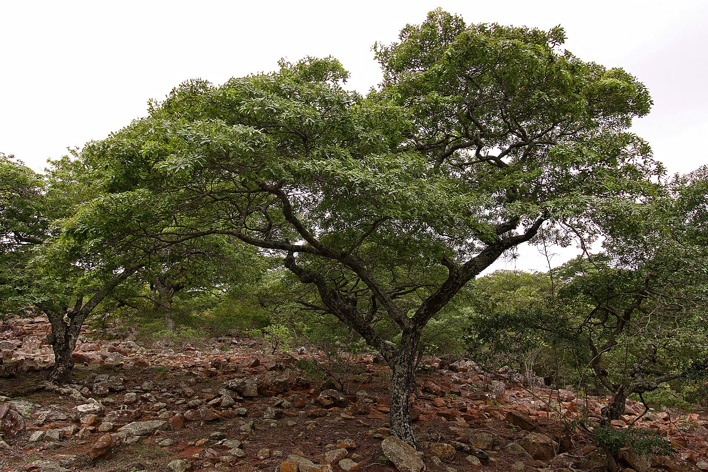

Miombo Honey & Sustainable Beekeeping
Tanzania’s core theme — a non-wood forest product that pays for keeping the trees

What it is
Beekeeping turns the flowering miombo canopy into honey and beeswax — a classic non-wood forest product harvested without felling a single tree. The bark- and box-hive honey belts of Tabora and the western miombo are among Africa’s model NTFP enterprises, tying household income directly to the trees that bees forage (Dewees et al., 2010).
How it works
- Hang bark or box hives in flowering miombo and let bees forage the Brachystegia–Julbernardia canopy
- Harvest honey and beeswax seasonally, leaving the colony and the trees intact
- The more flowering trees stand, the more honey — so income rewards keeping the canopy
- Add value through clean extraction, grading and packaging for local and export markets
- Organise producers into FFPOs for shared equipment, quality and market access
Key facts
- Champion country
- Tanzania
- Product
- Bark- & box-hive honey, beeswax
- Heartland
- Tabora belt, western miombo
- Co-benefits
- Pollination · canopy retention · diversified income
- Delivery
- FFPOs & Farmer Field Schools
Honey gives a standing-forest income — it pays only while the woodland stands, aligning a household’s livelihood with canopy cover and pollination (Dewees et al., 2010). It is a textbook example of making the dry forest worth more alive than cleared.
WOCAT classification
- Measures
- VMVegetative · Management
- WOCAT group
- Apiculture / non-wood forest products
- Degradation addressed
- Reduced vegetation coverLoss of biodiversity
Classified per the WOCAT SLM-Technologies classification.
✦Source and links
- • Miombo honey & sustainable beekeeping (profile)
- • People of the woodlands — honey, mushrooms & medicine
- • SLPF — green value chains
Sources (APA, 7th ed.).
- Dewees, P. A., Campbell, B. M., Katerere, Y., Sitoe, A., Cunningham, A. B., Angelsen, A., & Wunder, S. (2010). Managing the miombo woodlands of southern Africa: Policies, incentives and options for the rural poor. Journal of Natural Resources Policy Research, 2(1), 57–73. https://doi.org/10.1080/19390450903350846
- Ryan, C. M., Pritchard, R., McNicol, I., Owen, M., Fisher, J. A., & Lehmann, C. (2016). Ecosystem services from southern African woodlands and their future under global change. Philosophical Transactions of the Royal Society B, 371(1703), 20150312. https://doi.org/10.1098/rstb.2015.0312